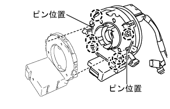
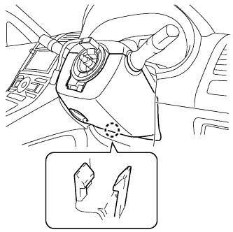
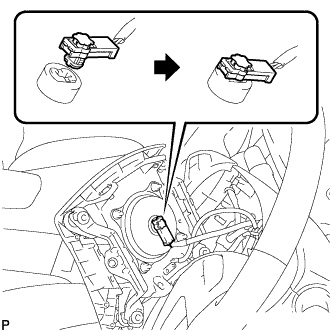

Spiral Cable Sub-assembly Installation |
| 1. Install Spiral Cable Sub-assembly |
 |
Align the 2 pin positions of the spiral cable with the 2 hole positions of the steering sensor.
Engage the 6 claws to install the spiral cable to the steering sensor.
| 2. Install Spiral Cable w/ Steering Sensor |
Set the turn signal switch to the neutral position.
 |
Engage the 3 claws to install the spiral cable w/ steering sensor.
Connect each connector to the spiral cable and steering sensor.
| 3. Install Steering Column Cover |
 |
Engage the 2 claws and pins, and install the steering column cover (upper side).
 |
Engage the 2 claws and install the steering column cover (lower side).
 |
Engage the 4 claws.
 |
Engage the claws.
| 4. Check Front Wheels Straight-ahead Position |
| 5. Center Spiral Cable |
Check that the IG is OFF.
Check that the battery negative terminal is disconnected.
 |
Slowly turn the spiral cable counterclockwise until it locks.
 |
From the locked position, turn the spiral cable back 2.5 turns clockwise and align the matchmarks shown in the illustration.
| 6. Install Steering Wheel Assembly |
 |
Align the matchmarks and install the steering wheel assembly to the steering column assembly.
Install the nut.
Connect each connector to the spiral cable.
| 7. Install Horn Button Assembly |
 |
Connect the horn connector to the horn button assembly.
Connect the airbag connector to the horn button assembly and lock it securely.
 |
Using a torx socket wrench (T30), install the horn button assembly to the steering wheel assembly with the 2 torx bolts.
| 8. Install Steering Wheel Cover Lower NO.3 |
 |
Engage the claws and install the steering wheel cover lower No.3.
| 9. Install Steering Wheel Cover Lower NO.2 |
 |
Engage the claws and install the steering wheel cover lower No.2.
| 10. Connect Battery Negative Terminal |
| 11. Inspect Airbag Warning Light |
)| 12. Setting Procedure When Disconnecting/Reconnecting Battery Terminal |
)